നൂർ ജേർണി • Islamic Learning & Madrasa Companion
Noor Journey is a dedicated values-first Islamic educational platform designed specifically for children aged 9–12 (Madrasa Classes 3 to 5). Created to address the modern challenge of digital distractions, Noor Journey pairs joyful, high-fidelity gamification with strict theological and pedagogical integrity aligned with the Samastha Kerala Islam Matha Vidyabhyasa Board (SKIMVB) standards.
Bite-sized missions (5–7 minutes), vibrant avatars, encouraging sound effects, and zero punitive game mechanics.
Structured around 5 core Madrasa subjects: Tajweed, Aqeedah, Fiqh, Akhlaq, and Lisanul-Quran with bilingual Malayalam/English support.
Four-eyes religious review pipeline, server-authoritative scoring, zero commercial advertisements, and parent-isolated profiles.
Engineered as a high-performance modern web platform utilizing a robust monorepo structure. Built with full cloud-native capabilities, supporting serverless PostgreSQL pooling and edge frontend distribution.
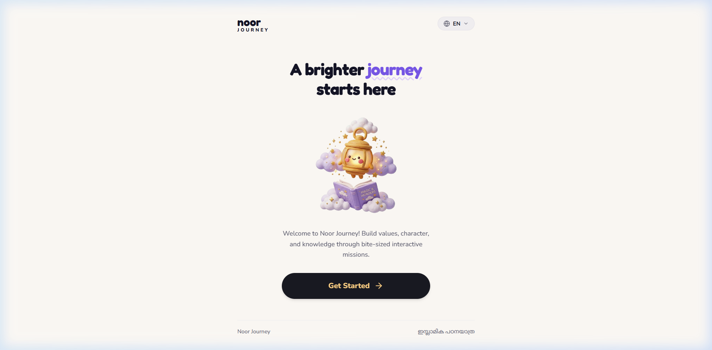
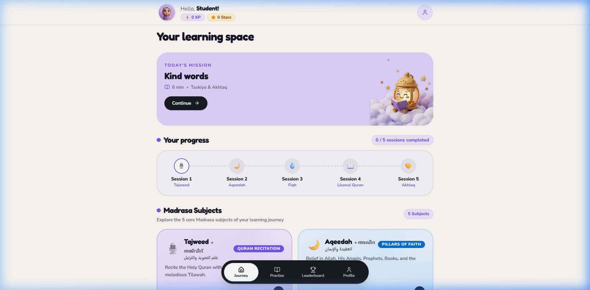
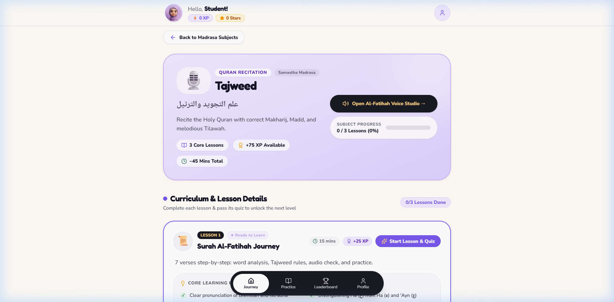
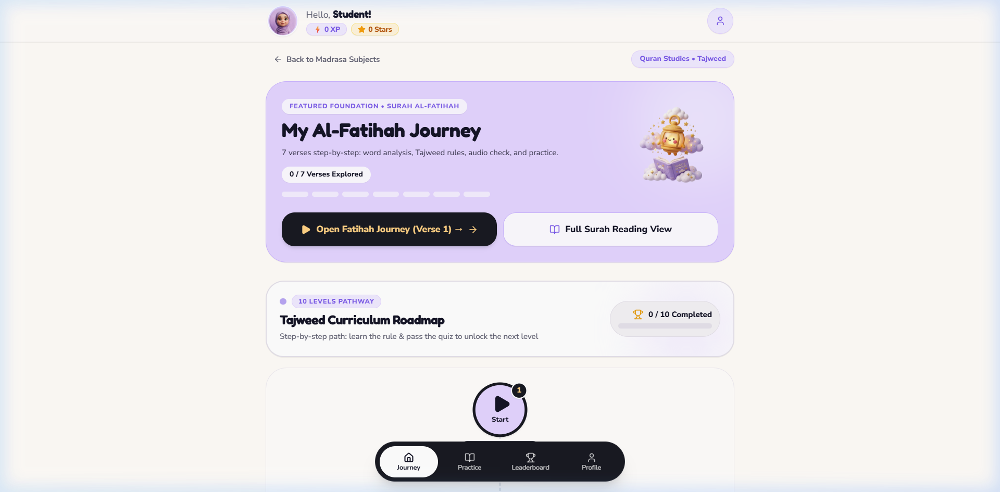
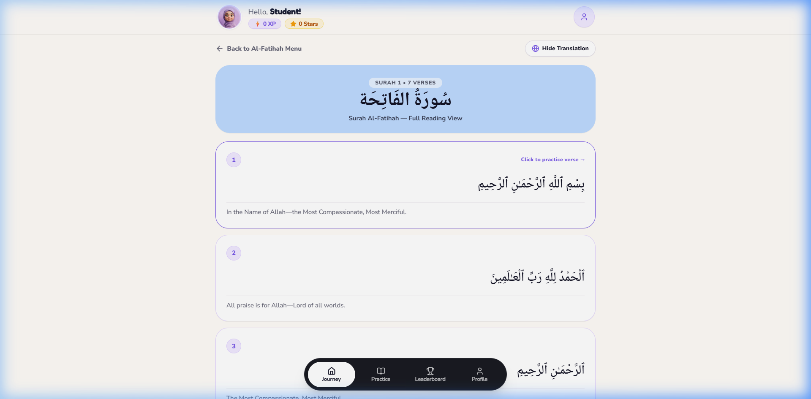
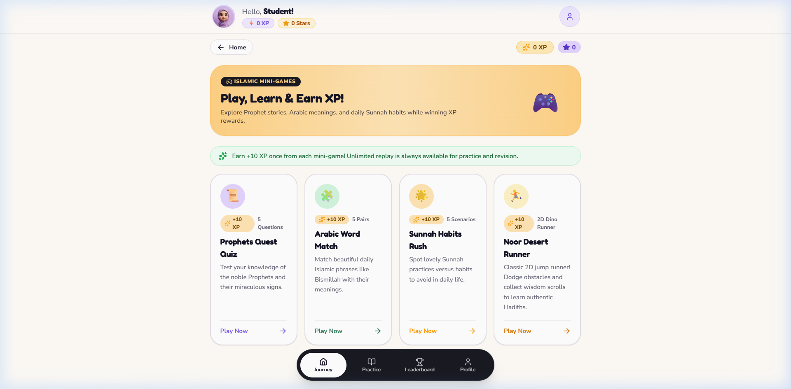
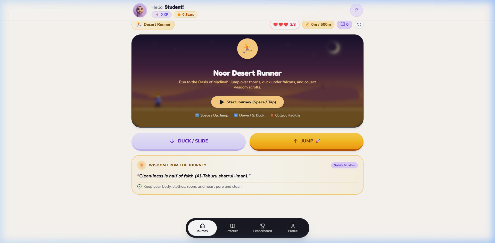
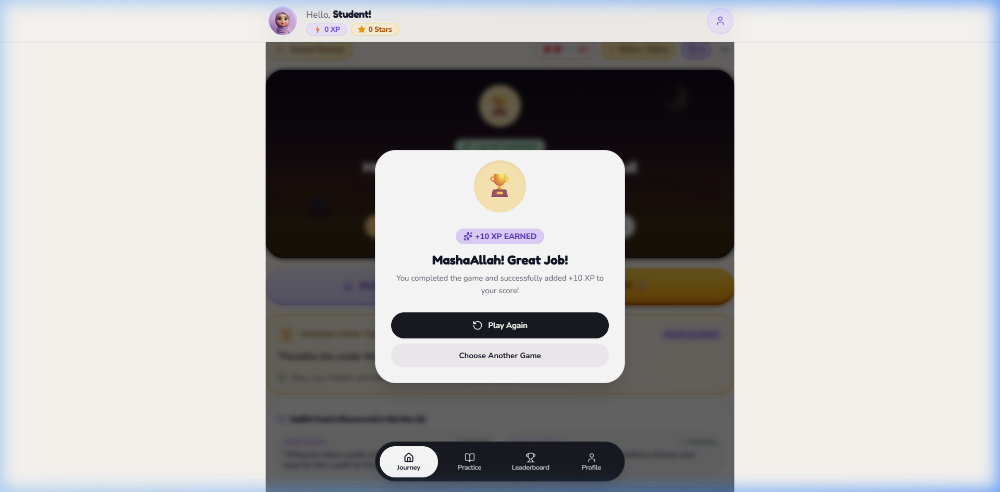
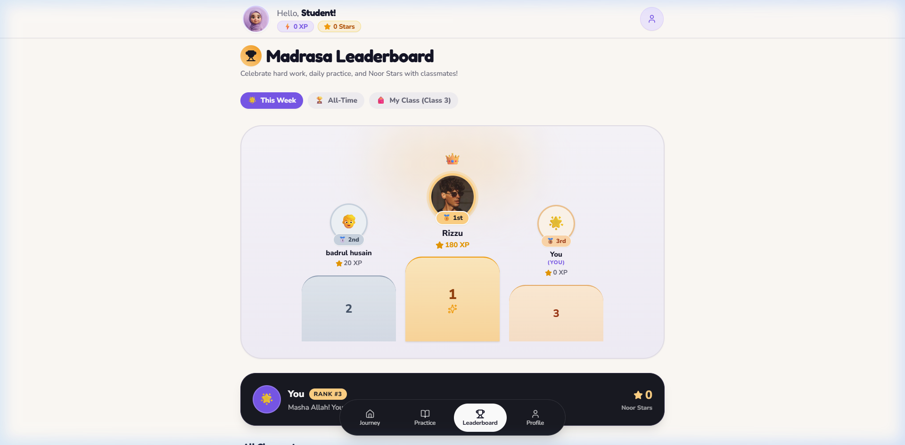
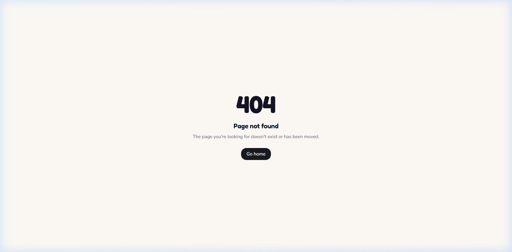
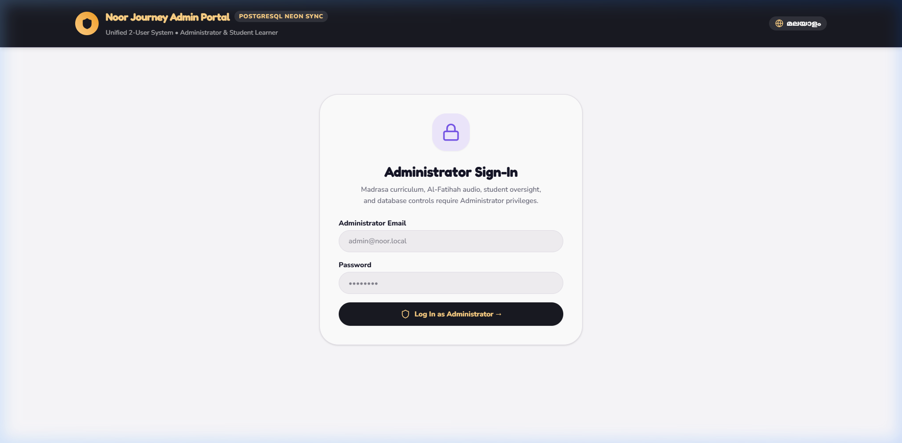
The platform enforces strict server-authoritative integrity to ensure that learning milestones reflect genuine student comprehension.
| Subject Domain | Intended SKIMVB Grade | Core Competencies | Assessment Structure |
|---|---|---|---|
| Tajweed & Quran | Classes 3 – 5 | Makharij (articulation), Surah Al-Fatihah, Noon Sakinah & Tanween rules. | Verse audio matching, pronunciation quizzes, 10-level pathway. |
| Aqeedah (Creed) | Classes 3 – 4 | Pillars of Iman, Tawheed, Attributes of Allah, Prophets & Books. | Concept pair matching, scenario discrimination, reflection. |
| Fiqh (Worship) | Classes 3 – 5 | Taharah, Wudu steps, Salah positions & timings, Adhan & Duas. | Interactive sequence ordering, timing checkers, visual puzzles. |
| Akhlaq (Ethics) | Classes 3 – 5 | Kind speech, respecting parents, honesty, patience, community care. | Dilemma choices, family reflection prompts, Sunnah habit runs. |
| Lisanul-Quran | Classes 4 – 5 | Common Quranic vocabulary, basic Arabic syntax, word pairs. | Flash cards, drag-and-drop matching, speed challenges. |
• Database: Serverless PostgreSQL on Neon (automated daily backups & branch scaling)
• Backend: NestJS 11 container on Render or Railway with health probes
• Frontend: React 19 / Vite edge distribution on Vercel with global CDN
• Complete Docker Compose configuration provided (docker-compose.yml)
• Internal network isolation between Nginx web server and NestJS API
• Zero dependency on external commercial trackers or ad networks
This document represents the operational state of the Noor Journey platform as demonstrated. Institutions seeking pilot trials, custom curriculum integrations, or white-label Madrasa deployments may proceed with user registration and administrative account bootstrapping.